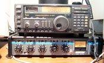

icom [ -r radio ] [ -c channel ] [ -m mode ] [ -g frequency ] [ -f file] [ -dk ]
This program controls ICOM radio transceivers and receivers with the CI-V option. Most recent ICOM radios already have this option; older radios can be converted with an appropriate adapter mounted inside the radio. Up to four CI-V radios can be connected to a single serial port using a level converter such as the CT-17, which includes a MAX232 chip and not much else.
The program is intended to control a radio or transceiver over the Internet, so is specifically designed for keyboard control from another computer via a full-duplex secure connection. No graphics interface is necessary or provided. Internet tools are available to support a two-way audio link.
The program implements a radio interface capable of controlling almost all radio functions, including frequency and mode selection, AGC, antenna, attenuator, break and preamp selection and, in some radios, tone, duplex and split controls. Commands are provided to read, write and empty memory banks and channels, where available. Banks and channels can be assigned attributes such as name, tone and duplex. The program can save and restore channel information to and from files for backup and cloning. Where supported by the radio, the program can set and reset switches such as the noise blanker, read and write controls such as the AF gain and read meters such as the signal (S) meter.
The program operates in one of three modes: keyboard, batch and keypad. In keyboard mode, commands and arguments are entered from the keyboard following the icom> prompt and the complete command set is available. In batch mode, the same commands and arguments are read from a specified file. In keypad mode, commands and arguments are entered from the keyboard and numeric keypad following the > prompt. In this mode, numeric data are entered from the numeric keypad followed by a single alphabetic character representing the command name. Shortcut arrow keys on the keyboard are used to tune up/down or increase/decrease the tuning rate.
Shell command line options can be used to select the radio model and set the frequency and mode. Using batch mode and a suitably crafted Unix crontab file, it is possible to tune a radio to different frequencies used by a shortwave broadcaster throughout the day, for example. With the minimuf program (available in a separate distribution), it is possible to build shell scripts that predict the most likely frequencies and tune the radio accordingly.
The program knows about most early and late model ICOM radios, including the 706, 756 and 7000 transceivers and the R72 and R8500 receivers. Use the radio ? command to see the currently supported list. The program can be told which radio is present or directed to scan for all known radios and report each one found. A number of diagnostic tests are performed on the selected radio to determine which options are present and to initialize to a known state. The program detects certain anomalistic behavior of some radios and adjusts its operations to make the behavior conform to a consistent model.
Following is an overview demonstrating how this program can be used in typical operating scenarios. The first command is ordinarily radio, which specifies the radio by model number. This initializes the program and radio to a known condition. The program displays the radio attributes and the first memory channel frequency, mode and additional data as available. The frequency and mode and other attributes can be entered and edited using the keyboard; the data are transferred to the radio with an enter keystroke. Alternatively, the radio controls can be used to set frequency and mode, and the data transferred to the program with an enter keystroke. Details on the keyboard and keypad commands are on the Keyboard and Batch Commands and Keypad Commands pages.
Most commands take arguments, although many arguments can be defaulted. A frequency argument less than 1000 specifies the frequency in MHz, while greater than 1000 specifies the frequency in kHz. An offset argument preceded by an explicit + or - character specifies the offset frequency relative to the current VFO frequency in kHz. Signed or unsigned step and rate arguments specify a tuning step in Hz. A bank.channel argument specifies a bank and memory channel available in the particular radio. For most commands a question mark ? argument displays context-sensitive help information for that command. The help information consists of a keyword argument followed by a brief description of the function.
Since the most common function is tuning the radio to different frequencies or scanning a band of frequencies, a compact parsing convention is provided. The parser scans the tokens in each command line in turn. If the current token is the name of a defined command, that command is executed. Otherwise, if the current token is a valid frequency, the radio frequency is set to that value. Otherwise, if the token is a valid mode name, the radio mode is set accordingly. Otherwise, the command is discarded and an error message is displayed. Use the mode ? command to see a list of valid mode names; however, note that not all radios implement all modes.
The keyboard mode can be very awkward when searching a band for signals, since a new command must be used every time the frequency is changed. The pad keyboard command puts the program in keypad mode and changes the prompt string to >. In this mode, arguments such as frequency, tuning step, etc., can be entered directly from the keyboard and numeric keypad. Of course, the keypad must be in numlock mode for this to work properly. In keypad mode, the argument is given first followed by a single character which executes the function. A single ? character displays a list of all functions.
Most ICOM receivers tune in 10-Hz steps, while most HF transceivers tune in 1-Hz steps and some VHF/UHF radios tune in 100-Hz steps. The easiest way to tune the radio is using keypad mode and the arrow keys. The UP and DOWN arrow keys adjust the frequency up or down one step, while the LEFT and RIGHT arrow keys decrease and increase the tuning rate (Hz per step) respectively. The rate values begin at the minimum tuning step and extend in 1-2.5-5-10 steps to 5 MHz per step. The arrow and ENTER keystrokes display the frequency and mode after the step. With a little practice, it is easy to scan a band (say with 1-kHz steps in USB) looking for signals and, when one is found, change to 100-Hz steps to move closer and then to 10-Hz steps for the final adjustment.
Late model ICOM transceivers have provisions for duplex and split operations. Ordinarily, FM repeater operations require that the station receiving on a frequency transmit at a fixed offset relative to that frequency. This operation is automatic with most VHF/UHF transceivers. Keyboard commands are available to specify the duplex offset and sign, although some early VHF/UHF transceivers apparently have no provision to control the sign of the offset with CI-V commands. Modern transceivers include separate duplex offset registers for HF, 6 m, 2 m and 70 cm. Front panel controls and this program can be used to select other than the default duplex offset and set either positive or negative duplex or none (simplex). In most modern transceiver the duplex sign can be saved in a memory channel, but the duplex offset magnitudes apply to all channels.
In split operation VFO A controls the receive frequency and VFO B the transmit frequency. The VFOs can be programmed from the front panel or this program. The split command does this automatically, either as an absolute frequency or a signed offset value added to the receive frequency.
Modern radios can save and recall a huge number of memory channels, 20 banks of 40 channels in the R8500 and 5 banks of 99 channels in the 7000. This program simulates uses the numbering schemes defined by the various radios where bank and channel numbering start at zero or one. The chan, write and empty commands operate on every channel in a selected range. The program displays the frequency, mode and related data provided by the radio. For most radios this includes the memory name, although the maximum supported characters varies. For instance, the 756 memory channels includes the filter, duplex, tone, tone squelch and digital tone squelch data. The R8500 includes the tuning step, programmed tuning step, attenuator and scan data. The save command saves this information for each channel in the selected range to a file, one line per channel. The restore command restores each channel in the selected range from the file.
The file can be constructed by the radio or from scratch and modified as necessary. Each line of the file has the form
b.c frequency mode ...,
where b.c is the bank and channel number, frequency is in MHz and mode a valid mode name. The "..." includes one or more subcommands of the form keyword value, as in an ordinary keyboard command. Use the chan ? command to see the list of valid keywords. Not all radios support the same commands and subcommands, so cloning one radio from another of a different model might require editing the file.
Modern ICOM radios, synthesize all oscillator signals from a single master oscillator. Once the master oscillator frequency is accurately calibrated, the various LO and BFO signals will be exactly on frequency. Older ICOM radios synthesize the LO signal, but use an independent oscillator for the BFO signal. In these radios, the BFO frequency is shifted using a varactor and a network of diodes and resistors to generate the necessary BFO frequencies. This method is not very accurate when remotely tuning the radio to a narrowband RTTY or packet transmission, for example.
This program has provisions to compensate for the systematic errors in both the synthesized LO signal and varactor-switched BFO signals. This is done by adjusting the VFO frequency to compensate for the LO error and BFO frequency is compensated for each mode separately. Individual BFO errors. The commands to do this along with the calibration procedure are on the Keyboard and Batch Commands page.
Batch mode is designed for cases where a number of radios are to be cloned or programmed with memory channel blocks from another program. In principle, a Unix shell script could search an archive for the current VOA transmission schedules and transmitter locations, another program could determine the propagation model and best frequencies for the receiver location and current time of day, and then program the radio(s) with the results.
When using this program to operate more than one radio, it is useful for the batch file to define the VFO and BFO compensation for each radio. This allows the frequency files to use the assigned frequency of the station. The batch file can then load the frequency files in memory channel blocks as required. This allows channel blocks to be created by other programs and copied from one radio to another.
The program communicates with one or more radios using the icom CI-V broadcast bus and serial asynchronous protocol. The CT-17 level converter can be used to interface the CI-V voltage levels (TTL) to EIA (RS-232) levels, or a homebrew unit can be made from the MAX232 IC plus a handful of capacitors. The CT-17 supports up to four radios, but there is no inherent protocol limitation to this number. The CI-V uses active-low drivers with resistor pullups, so multiple radios can be connected to the same wire.
Messages are exchanged in the form of frames beginning with two preamble octets (0xfe) and ending with one postamble octet (0xfd). The message itself contains the source, destination, command and argument octets as necessary. In order to handle the older radios, the control program operates at 9600 bps; however, it can be compiled to operate at other speeds. All radios on the bus need to operate at the same rate. Each radio model is assigned a unique identifier octet, which can be changed if necessary. The control program sends a frame with that identifier and expects a reply, either containing data or a single ACK (0xfb) or NAK (0xfa). Most functions implemented by the control program require an exchange of several frames.
It has been the experience that some radios can occasionally fail to respond to a command or respond with a mangled frame. Therefore, the control program includes a good deal of error recovery code and uses timeouts and retransmissions as necessary. Since the CI-V bus uses a broadcast architecture, every octet transmitted by the control program is read back for verification. If the readback fails or no reply is received after three retransmissions, the operation fails and an error message is displayed.
The trace command can be used to watch the protocol interactions between the program and radios. The argument bus enables packet trace. The trace operates from received octets, either a readback of a transmitted frame preceded by T: or a copy of a received frame preceded by R:. Each transmission is repeated up to three times in case of error, after which the operation fails and is reported as an error. The argument packet enables bus error messages, which are normally suppressed until the maximum retry limit is reached.
The dump command displays the current main VFO contents in hex plus other information as labelled.
Written by David L. Mills, W3HCF; this update 24 April 2006, last update 24 September 1996.
This is a work in progress. Many idiosyncrasies of various ICOM radios remain to be discovered.